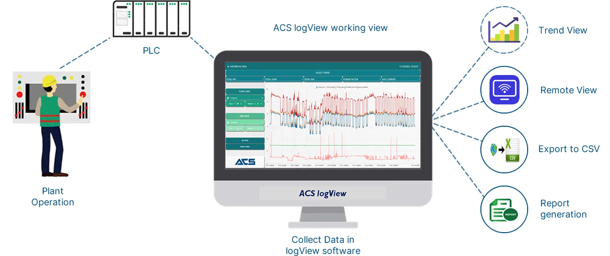

Software & Cutting Edge Technologies
ACS logView —
ACS logView —
Smart Data Logger
Smart Logging System with graphical view
LogView is used for
- Keep digital records of required parameters and provide view in trend form for easy troubleshooting
- Digitalize manual entry and collect real-time data
- Provide customized filtration and collect selected data only
- Connect with any PLC / SCADA / Controller


Benefits
What you get
What you get
with logView
- 50 tags inclusive in basic package
- Trend facility available in basic package
- Easy to install
- Accurate data log
- Report column name dynamic — change at any time
- And many more benefits
Why ACS logView?
Conventional SCADA
Conventional SCADA
vs logView
| Conventional SCADA | ACS Smart logView |
|---|---|
| Number of records limited | Records limited by storage only |
| Custom filtration not available | Filtration available on all records |
| Historical trends not available | Historical trends with smart viewer |
| No tabular format viewer | Tabular format available to monitor |
No need to add higher SCADA features or upgrade SCADA for data analysis. Replace SCADA upgradation with ACS logView.
ACS logView Package
ACSLVB10
ACSLVA10
ACSLVIOT10
Available Packages
Basic Package
50 Tags Inclusive · Trend Facility
Advance Package
100 Tags Inclusive · Trend Facility · Report Generation
IOT Enable
Critical Notification by Email · Alarm Grouping · Alarm Dispatcher by Email
| Additional / Upgrade Features | Package code |
|---|---|
| Upgrade to 100 Tags | ACSLVU100 |
| Upgrade to 200 Tags | ACSLVU200 |
| Upgrade to 400 Tags | ACSLVU400 |
| Report Generation | ACSLV-RU |
Need dependable automation execution?
Talk to ACS Engitech about PLC panels, SCADA systems, process automation, machine automation, data logging, or Siemens automation support.